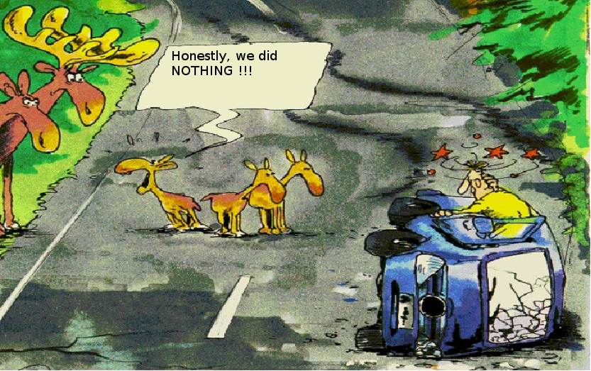
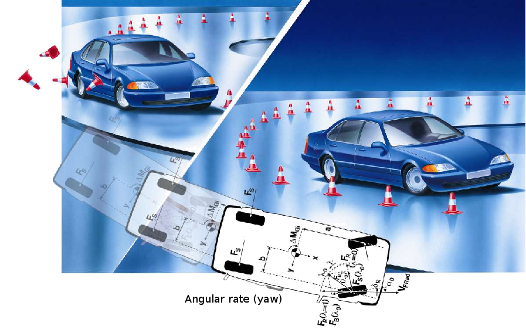
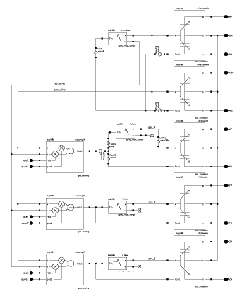
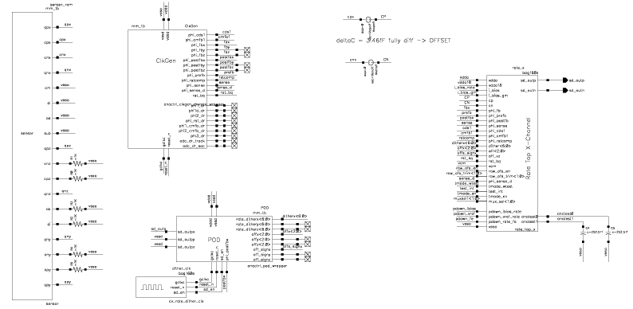

Systems Engineering for Gyros#
Vehicles without ESP#

Vehicle Dynamics Controls Systems - ESP#

Consumer Gyroscopes#
Market segments.
Mobile phones
Digital cameras
Pointing devices
Gaming consoles
GPS portables


MEMS for Automotive and Consumer Applications#
Plenary Sessions from the 2010 ISSCC
Jiri Marek, Senior Vice President, Robert Bosch, Reutlingen, Germany
MEMS Gyroscope in Action#
Drive movement as model animation.
Sense movement as model animation.
Spring-Mass-Damping System#
1-D equation of motion (EoM) \(F = m\ddot{x} + d\dot{x} + kx\)
Laplace transformation
Functional Block Diagram#

Coriolis force principle, \(F_C = 2 m \left(\mathbf{v} \times \Omega \right)\)
Drive loop to have an accelerated mass
Sense loop to detect angular rate
Distinction of closed-loop and open-loop system
Multi-Domain Readout Block Diagram#

Multi-Domain Modelling#
Describing kinematic and electrical behaviour with the help of HDL
VHDL, VHDL-AMS
Verilog, Verilog-A, Verilog-AMS
Using ROM for a MATLAB/SIMULINK model and real-time workshop to port model for use with Cadence \(\rightarrow\) Verilog-AMS is used for wrapping
Parasitic SPICE circuit equivalent from FEM sensor model and layout extraction
ROM Modelling - Coordinate transformation#

Gyro Behavioural Modelling#

Mixed-domain simulation#
All models from previous slide can be used in Cadence design frame work
Pure analog closed-loop transient simulation with Spectre (turbo, aps), circuits and verilog-a model
Pure analog closed-loop simulation with SPICE circuit equivalent
Mixed-domain, mixed-mode simulation with AMSDesigner (ncsim, spectre-turbo/aps)
Analog Closed-Loop Simulation#

AMS Closed-Loop Simulation#

Conclusion#
Vibratory Gyroscopes.
Automotive and consumer applications
System architectures
Mixed-domain, mixed-mode analysis
Interdisciplinarity \(\rightarrow\) IC Systems Engineering Control theory, signal theory, process technology and micromechanics
More DOF’s.
Acceleration and angular rate (6 DOF’s)
Angulare rate and magneto sensors (6 DOF’s)
Acceleration, angular and magneto (9 DOF’s)